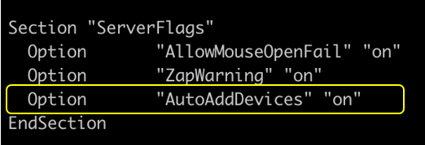

GE Signa HDX MR Scanner - Mouse misalignment Fix
Step 1: Login as root and navigate to /etc/X11 directory using below command
cd /etc/X11/
Step 2: Edit xorg.conf file to add BBOXABSMOUSE device as below
Option “AutoAddDevices” “on”

Add following section below the Mouse[1] input device.
Section "InputDevice"
Driver "evdev"
Identifier "BBOXABSMOUSE"
Option "Type" "cursor"
Option "Device" "/dev/input/event"
Option "Mode" "Absolute"
Option "SendCoreEvents" "on"
EndSection

Add line below line to server layout.
InputDevice "BBOXABSMOUSE" "SendCoreEvents"
Save file and exit
Step 3: Download and copy script to /etc/init.d/check_event_boot
#! /bin/sh
# chkconfig: 5 98 10
### BEGIN INIT INFO
# Provides: check_event_boot
# Required-Start: $local_fs
# Required-Stop:
# Should-Start: xdm
# Should-Stop:
# Default-Start: 5
# Default-Stop:
# Description: Routine to start check_event_boot at system startup
### END INIT INFO
event=$(readlink /dev/input/by-id/usb-Custom_Cloud_Device_Custom_Cloud_Device-event-joystick | awk '{print substr($0,4)}')
if [ -z "$event" ]
then
sed -i s'/\"Device" \"\/dev\/input\/event.*\"/\"Device" \"\/dev\/input\/event\"/' /etc/X11/xorg.conf
else
sed -i s'/\"Device" \"\/dev\/input\/event.*\"/\"Device" \"\/dev\/input\/'$event'\"/' /etc/X11/xorg.conf
fi
Step 4: give executable execute permission and convert script as a part of init process
chmod u+x /etc.init.d/check_event_boot
#Activate init script by running below command
insserv /etc.init.d/check_event_boot
Reboot server
Identifying dual mouse support on GE Scanner Machine
Apart from checking physically, we can also check dual mouse support from /etc/X11/xorg.conf file.
Check if below lines are present inside xorg.conf file to confirm dual mouse support
InputDevices "/dev/input/mice"
and
Section "InputDevice"
Identifier "Mouse[1]"
Driver "mouse"
Option "Buttons" "12"
Option "Device" "/dev/input/mice"
Option "Name" "Logitech USB Optical Mouse"
Option "Protocol" "explorerps/2"
Option "Vendor" "Sysp"
Option "ZAxisMapping" "4 5"
EndSection